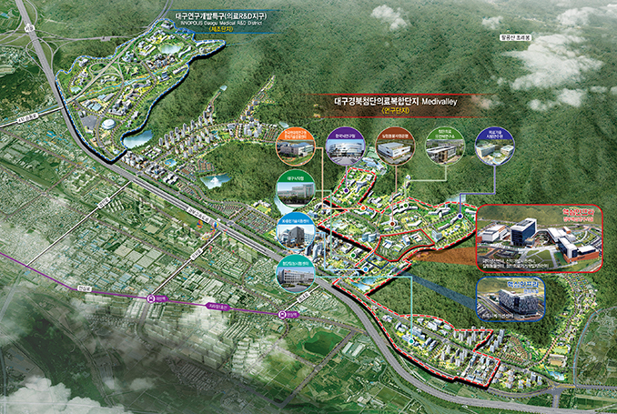
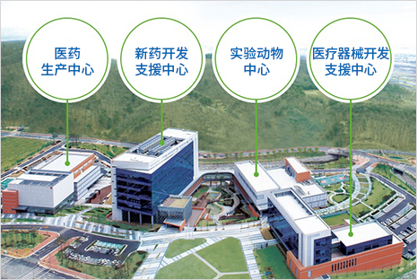

医疗产业
- Home
- 主要产业
- 医疗产业
尖端医疗综合园区的组建

奠定园区基础
- 位置/规模 : 东区 新西洞 革新城市内 1,030,000㎡
- 主要设施 : 新药开发支援中心、医疗仪器开发支援中心、实验动物中心、临床试验新药生产中心等
- 工期 : 2009~2038年(园区组建2010~2013年)
- 项目费 : 4.6兆韩元(国家预算1.1、地方预算0.9、民资2.6)
在园区内建设政府核心基础设施与研究支援设施(2010~2013年，2,649亿韩元)。
- 地皮面积70,100m2，设计(2010年2月~2011年5月)，工程(2011年10月~2013年11月)
- 新药/尖端医疗仪器开发支援中心、实验动物/临床试验新药生产中心、共同设施
为创出研究开发的互动效益，建设交流中心(2010~2013年，342亿韩元)。
- 地皮面积10,112m2(地下1层、地上8层)，设计(2010年7月2011年6月)，工程(2011年10月~2013年4月)
购买、支援地皮，以奠定园区基础(2010~2015年，572亿韩元)。
- 地皮购买(政府、自治体设施，80,000m2)，购买支援(民企入驻区，395,000m2)
- 确定地皮供应价与树立民企入驻区域的支援计划(2011年12月~2012年6月)
构成园区运营系统
- 为搞活正式的研发活动，确保外部研究设施和雇用优秀的研究人才(2012年24名)。
- 各中心中长期项目计划、人才/设备供需计划等
- 制定各研究开发领域的研发企划、园区品牌开发与差别化的市场战略。
构成园区支援系统
-
建立“医药城基金”，以在前期支援搞活园区(2011~2020年，500亿韩元)。
- 财源：大邱市出资基金总额的90%(450亿韩元)、民间出资10%(50亿韩元)
- 构成、运营“医药城基金”的运营委员会(15名以内，2012年上半年组成)
-
推进建立“医疗产业培养基金”，以支援风险企业。
- 第一次基金组建预测规模：160亿韩元(政府80、市10、民资70)
-
营建国内外医疗基地、构成园区内外研究开发机关的合作体系。
- 构成大学、机关、企业与园区内研究开发机关间的协议体
- 建立国内外医疗基地和网络(企业/机关合作、人才交流等)
推进引进企业、机关
-
为实现园区的全球化，引进核心企业和研究机关
- 原签署MOU企业(14家)的后续措施(签署入驻协议、合同等)
- 招商引进特殊对象企业、跨国企业，以及支援潜力风险企业创业等
- 推进引进国策研究机关、海外研究所、政府新设研究中心等
发展尖端医疗仪器产业
奠定医疗仪器产业的基础
-
支援潜力商品(视频诊断、电动轮椅)的开发与中心商务活动，以发展IT融合医疗仪器产业(2009~2012年，613亿韩元)。
- 持续进行原有课题(18项研发、2项企业支援)、寻找新课题(2012年6~7月)
-
为加工、出口符合西方人的牙齿填充物、开发材料，搞活牙齿材料和牙科工艺基地(2010~2012年，107亿韩元)。
- 构成出口支援事业化体统、大力培养专家技术人才和实施符合型临床教育等。
-
为提高医疗仪器临床试验的技术水平，和搞活相关临床试验，建设医疗仪器临床试验中心(2008~2012年，105亿韩元)。
- 奠定临床试验基础、实施医疗仪器临床试验与相关专家的教育等。
发展IT基础的保健产业
-
为进入u-保健领域的全球市场，推进IT-保健产业培育项目*(2009~2012年，18亿韩元)与智能保健服务示范项目**(2010~2012年，152亿韩元)
- u-保健产品的国际共同开发(新西兰)、建立测试场与网络
- 构成慢性疾病患者的远程视频治疗、运动与用药等的管理系统
-
为增进对高龄化产品的理解度和实现产业化，组建、运营老年人体验馆(2010~2015年，16亿韩元)。
- 老年人体验项目与文化中心，运营高龄化产品使用评价室等。
发展地方特色医疗品牌


运营特色医疗中心
-
对于慢性、难治愈的疾患，构成西医、韩医方、补充替代医疗等相结合的治疗体系，推进建设综合医疗中心和研究开发(2009~2012年，316亿韩元)。
- 工程动工(2011年7月)，中心竣工(2012年)
-
为把组织再生领域开发成地方特色的医疗技术，运营国际再生医学研究所和支援特色技术开发(2009~2013年，49亿韩元)。
- 与美国维克森林大学(Wake Forest university)实施共同临床研究，即应用羊水干细胞的根组织再生等。
搞活各领域的医疗技术开发
-
为确保作为医药城的高水平医疗技术，支援各专业领域医疗研发中心的医疗技术开发与事业化(2012年，63.9亿韩元)。
搞活各领域的医疗技术开发 : 中心名称, 研究领域, ’12项目费 (市预算) 中心名称 研究领域 ’12项目费 (市预算) 末期肾病临床研究中心 肾不全患者的临床试验与标准指南的确定 9.0亿韩元(0.5) 尖端诊断预测医疗技术基地 疾病特殊信息的发掘与诊断技术的开发 27.7亿韩元(5.0) 人体生物资源地方据点银行 人体、病原体资源的收集与出售 10.4亿韩元(1.0) 头颅、脸部机能障碍研究中心 头颅脸部障碍控制技术与治疗法的开发 10.7亿韩元(1.0) 癌康复研究中心 肺癌治疗技术的开发 6.1亿韩元(1.0) -
研发技术商用化，即开发癌诊断核心技术的商用化技术(2011~2015年，135亿韩元)。
- 癌诊断商用化的技术开发、临床验证与评价、市场支援等
搞活医疗旅游
-
搞活地方医疗旅游的基础设施，加强引进外国医疗游客(2012年1万名，14亿韩元)。
- 构成“一站式”的支援体系(运营综合信息中心)
- 开发与搞活整形、名品韩方等治疗、体验旅游结合商品，培养医疗旅游相关专业人才(翻译)
- 先进医疗机关的指定与市场支援
- 以俄罗斯、越南等新兴医疗旅游需求国家为对象，先占领市场，或联合市的姊妹、友好城市，开拓新市场。
- 加强医疗旅游毛发移植专用中心的工作力度，以把世界最高水平的毛发移植技术发展成地方代表性医疗旅游商品(民资30亿韩元)。
加强生物、韩医方产业的基础
加强生物产业的基础
-
[战略产业的振兴] 以生物保健融合中心为主，整顿培育基础设施、支援技术等，加强生物企业的竞争力(2009~2012年，85.7亿韩元)。
- 健康机能材料的培育基础项目、生物产业的基础支援项目、专门人才的培养项目等
- 建设食品营养遗传体研究中心(2008~2015年，76亿韩元)，以开发慢性疾病预防技术。结合当地食品和医疗服务，发展保健品、食品产业园区等，搞活有治疗功效的当地食品(2010~2012年，30.8亿韩元)。
- 为缓解石油依存度和减少二氧化碳的排放，发展以绿色碳为基础的生物化学产业。(2013~2017年，3,185亿韩元)，从而加强国家竞争力和搞活地方经济。
搞活韩医方产业
-
为挖掘候补新药(天然物质、合成新药)，建立天然物质银行(2011~2014年，61亿韩元)
- 构成天然物质分离、提取和提供的合作体系，建立天然物质综合信息库等。
-
支援韩医方生命资源研究中心，以使韩医方科学化与开发韩医方新药(2003~2012年，122亿韩元)。
- 设备建设与应用、研究开发与人才培养、开发技术项目化、技术转移/指导
- 防治科学国际研究中心(2011~2018年，104亿韩元)，为提高韩药制剂的质量及稳定供应，推进韩药制剂形状的现代化(2012~2016年，80亿韩元)。
- 运营韩医方产业支援中心(2009~2012年，18亿韩元)、大邱庆北韩医方产业振兴院。(2012~2016年，100亿韩元)，以开发韩医方产品、确保韩医方产品的信誉度、开发韩医方治疗技术、奠定韩医方材料的生产基础。
-
建设韩医方研究院的韩医方技术应用中心(2011~2013年，236亿韩元)，推进韩药材的开发项目(2012年，5亿韩元)。
- 韩医方预防、治疗技术与融综合韩医方技术的实用化等，组建特色技术的开发中心。
- 组建俄罗斯(罗斯托夫)韩药材开发园区；构成韩药材进口、加工与流通网；开发机能性物质与天然物质新药等。